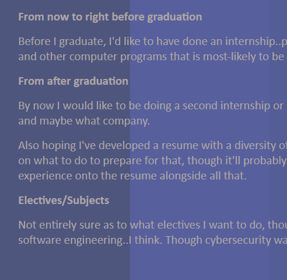

Overall Design
The overall design focused on effective accessibility, aesthetics and functionality all derived from the choice of design.
| Filename and Type | Title | Content |
|---|---|---|
| index.html | Web Systems Assignment | Introducing myself and the webpages |
| past.html | Past History | Describing my experiences |
| future.html | Future Plans | Thought of some future goals/aspirations |
| comments.html | Comments Page | Yo welcome to the comments page |
| websystems.css | N/A | Main coding of functionality and design |
The overall design consists of three important factors: Accessibility, Aesthetics and Structure.
More specifically, the use selectors such as class and divs allowed for better element control, in regards to styling and positioning. This allowed for an structure capable of adapting to a variety of devices modes (later discussed).
The integration of divs, classes, spans and other elements enabled CSS to properly integrate customability. For example, everything in this page is built from the barebones of these elements, ultimately being pieced in a way to construct something like colored tables, changing colored backgrounds and everything else displayed.
Specifically, the header and body element were the most important to structure, with header comprising of a navigation bar, and body comprising of borders, tables, titles, paragraphs all further explored below
Summarisation of certain technical aspects and my intended purposes (structure developed)
| Structures Developed | Tags, attribute and selectors involved | Design |
|---|---|---|
| Navigation Bar | Selectors: Header, Class and ID Tag: Header, img, span, a, li and ul Attributes: src, alt and href |
|
| Images | Selectors: Class, ID and img Tag: img Attributes: src and alt |
|
| Tables and Text | Selectors: Class, ID, table, tr, td, th Tag: table, tr, td, and th Attributes: n/a |
|
| Background | Selectors: Class, ID and img Tag: img, div and span Attributes: src, alt, div and span |
|
| Background Headers | Selectors: Class, ID, div and span Tag: div and span Attributes: div and span |
|
| Borders/Headers | Selectors: Class and ID Tag: img, div and span Attributes: src, alt, div and span |
The website has a diversity of functions that provide accessibility across a variety of disabilities: ranging from blind to deaf.
| Accessibility Tools | Function | Design |
|---|---|---|
| Contrast | Highlighting font visibility through colour contrast | Done by using selecting specific colours to create contrast |
| Highlighter | Allow cursour to create colour contrast for specific elements for easier reading | Done by changing element background colour upon hover |
| Aria-labels | Stores code intended to be read by a screen reader for deaf people | Thought of some future goals/aspirations |
| Alt tags | Describes the content of an image, in case unavailable | Implement alt tag within img element |
| Multimodal Compatibility | Capable of re-sizing to fit different dimensions for any device | Use of font-size, width, height and other unit dimensions that are relative in size: rem, em, % and auto |
Contrast
Through sites such as contrast checker, I was able to measure the quality of contrast, ensuring font-visibility throughout a variety of pages. Below is an example of what I used in my home page, with the image below revealing its contrast checker results and quality.
When an element is highlighted through a screen reader, the assisitive technology would read the text between the aria labels, informing people of anything worth mentioning.
<ul id="nav-bar" aria-label="navigation bar">
< li> <a href ="index.html" aria-label="Home Page Link">Home </a> </li>
< li> <a href ="past.html" aria-label="Past Page Link">Past History </a> </li>
<span id="Homeeex" aria-label="Future Page Link">Future Plans </span>
<li> <a href ="comments.html" aria-label="Comments Page Link">Website Comments </a> </li>
</ul>
The above is a sample of some of the code where aria labels were used to describe the navigation bar and each of its functionalities. Though, below is an example of the alt tag in use, which carries the same effect as an aria label, except limited to images. Basically its like the aria labels for image elements.
<img src="contrastProof.png" id="contrastimgProof" alt="image of contrast checker">
Below are images displaying sections of each page for a device of 800x600 size. Feel free to examine it yourself if the images are unclear, or you can also click/tap on an image to view the full-sized picture. To check other dimensions you can right click, select inspect element and tap the top-left phone icon of the pop-up.
As discussed in the overall accessibility table at the top, the use of relative units like vh,vw, rem, %, etc allowed for this website to adapt to the viewing screen dimensions as shown below:
Aesthetics
For the UI design of the website, I wanted to experiment a bit with what I could do with CSS, meaning I took an experimental approach in the intention of creating a sense of abstract feel. With this assessment being an introduction to myself and what my skills looked like, I thought that of including stuff like animations to reinforce this aesthetic form of abstraction, whilst focusing on accessibility. For example, in the first page I wanted to try create a dark mode page where reading was easier on, though in later pagers I tried colour-changing backgrounds, that comprised of contrasting colours for better reading.
A potential issue of background colours is its readability and so I created a highlighting tool which would highlight the text upon hovering over it OR if on mobile, tapping it.
Background and its Colours
Sometimes the backgrounds would consist of colours, and this was to establish an dark mode aesthetic. I also included looped animations/gifs that would further reinforce the inital dark mode feel established.Though upon reaching this webpage, it changed into a space of changing colours.
For the background, I generally used a variety of blue shades. The purpose of this colour is its impact on sensory responses, and to sum this site's research using a quote, I would say, blue is the "preferred colour for those with a visual impairment."
Though the shades of blue vary in effectiveness for a variety of people, hence why I implemented a range of blue shades, especially in the Future Page.
Borders and Font
An example of border-use is shown below, and the intended purpose of this design form is to provide a smooth transition between different colours, or to frame an idea. This generally requires
a judicious selection of colours to create the transition, whilst appealing to my accessibility goal of using colour contrast. Kinda sounds contradictory when using colours that provide a smooth transition whilst also creating contrast, and it does initalliy. However, to
fix this design flaw I used animations for this purpose, which allowed for the use of a multitude of colours, where each colour could fufil the goal of creating contrast between colours or a smooth transition.
Header + Navigation Bar
For the header I wanted it to be transparent, so that the background would fill its look, to create somewhat of a seemless merge of display. This allowed for every background change to also affect the header appearence, which is why you see a variety of backgrounds also behind the nav bar. This helped reinforce this abstract look established from each page. I also made it so that if your cursor is on the nav bar page options, it would show a RGB-ish rainbow to highlight the fact that it's being clicked on. To reinforce the authenticity of the nav bar, I also changed the color of the page we were on and removed the option to select that page again.
{kind=link}
{kind=link}
{kind=link}
{kind=link}